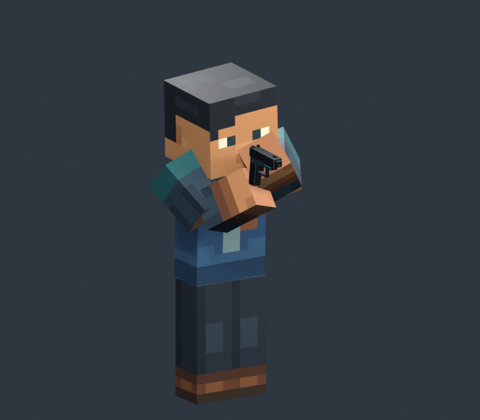
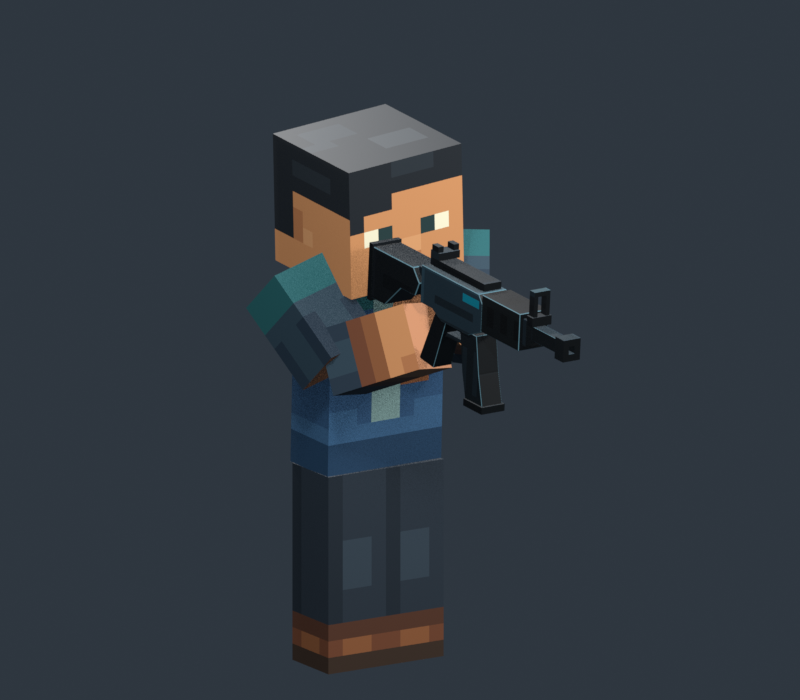
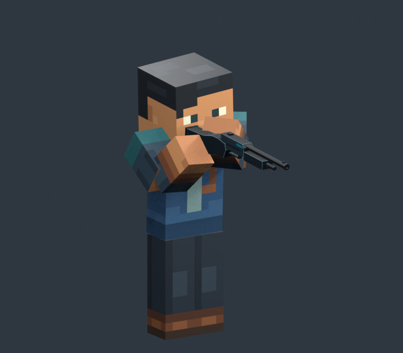

01
Pistol


WH2 · refined elbow fold
Clear upward elbow folds, with the approved right-hand ownership, light left support and right-eye relationship. Pistol, rifle/M4 and shotgun share the same direction.
Study only · awaiting human reviewChoose an angle or switch to the approved pose. Click a character to inspect the full render.

WH2 · refined elbow fold

WH2 · refined elbow fold

WH2 · refined elbow fold
A is the approved WH1 hold. B refines the elbow fold. Both use the same weapon placement, head motion and lower-body phase.